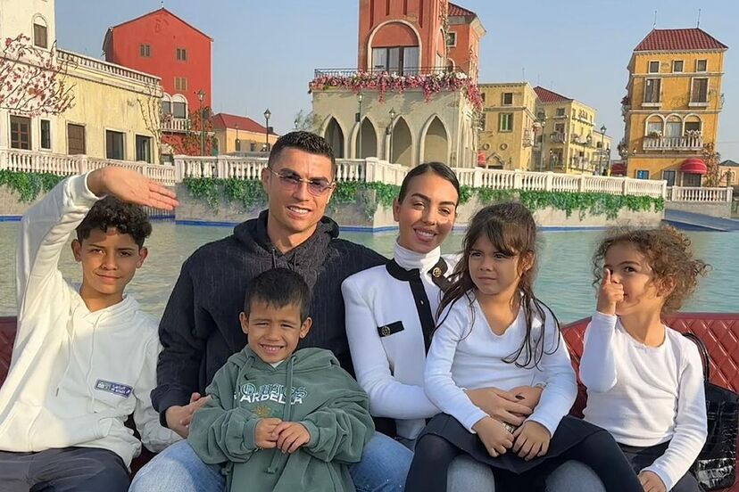

Cristiano Ronaldo nació el 5 de febrero de 1985 en Funchal, Madeira, Portugal, en el seno de una familia humilde. Desde pequeño, su entorno estuvo marcado por la sencillez y el esfuerzo, valores que moldearon su carácter competitivo y trabajador.
Su madre, María Dolores dos Santos Aveiro, trabajaba como cocinera y fue una de sus mayores apoyos desde el inicio de su carrera. Siempre creyó en su talento y sacrificó mucho para que Cristiano pudiera perseguir su sueño en el fútbol. Con el paso del tiempo, se ha convertido en una de las figuras más importantes en su vida y lo acompaña en muchos de sus momentos más importantes.
Su padre, José Dinis Aveiro, era jardinero municipal y excombatiente de la guerra colonial de Angola. Lamentablemente, sufrió problemas con el alcohol, lo que afectó su relación con la familia. Falleció en 2005 a causa de problemas hepáticos, cuando Cristiano tenía solo 20 años y jugaba en el Manchester United. Su pérdida fue un golpe duro para él, ya que siempre quiso que su padre viera todo lo que lograría en el fútbol.
Cristiano tiene tres hermanos mayores:
A lo largo de su vida, Cristiano ha demostrado un profundo amor por su familia. A pesar de alcanzar la cima del fútbol mundial, nunca olvidó sus orígenes y ha asegurado el bienestar de los suyos. Ha apoyado económicamente a su madre y hermanos, compró casas para ellos y ha estado presente en momentos clave. Para Cristiano, su familia sigue siendo su mayor inspiración y motor para seguir logrando grandes cosas.

Cristiano Ronaldo tiene una familia actual que refleja su vida llena de amor y compromiso. Está en una relación estable con Georgina Rodríguez, una modelo y empresaria española de origen argentino, a quien conoció en 2016. Su relación comenzó cuando se encontraron en una tienda de lujo en Madrid, donde Georgina trabajaba como asistente. Desde ese momento, su conexión creció rápidamente y comenzaron una vida juntos. A lo largo de los años, Georgina ha sido un pilar fundamental en la vida de Cristiano, apoyándolo no solo en su carrera, sino también en la crianza de sus hijos. Juntos, han compartido numerosos momentos felices, y Georgina se ha convertido en una figura muy importante tanto para él como para su familia.
Cristiano es padre de cinco hijos. El primero, Cristiano Ronaldo Jr., nació en 2010. La identidad de su madre nunca ha sido revelada, ya que el niño fue concebido mediante gestación subrogada. A pesar de ello, Cristiano tiene una relación muy cercana con su hijo, quien a menudo muestra su talento futbolístico en las redes sociales. En 2017, Cristiano tuvo gemelos, Eva y Mateo, nacidos también por gestación subrogada. Aunque los gemelos no son hijos biológicos de Georgina, la modelo los acogió con mucho amor y se convirtió en una madre ejemplar para ellos.
En 2017, Georgina y Cristiano también dieron la bienvenida a su hija, Alana Martina, fruto de su relación. Alana ha sido la primera hija biológica de la pareja, y ambos se han mostrado muy felices con su llegada, compartiendo en redes sociales momentos familiares. Más tarde, en 2022, la pareja recibió con gran emoción la llegada de mellizos, un niño y una niña, pero lamentablemente, el niño falleció poco después de nacer, lo que fue una tragedia para la familia. Sin embargo, Cristiano y Georgina han sido siempre muy unidos y han encontrado fuerza en su amor y en la cercanía de su familia.
La familia de Cristiano, aunque en ocasiones sufre desafíos personales, sigue siendo su mayor fuente de motivación y orgullo. El futbolista siempre ha dejado claro que su familia es su principal apoyo y que el amor que recibe de ellos es lo que lo impulsa a seguir alcanzando grandes logros en su carrera y en su vida personal.